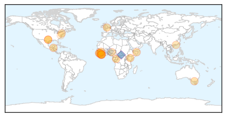
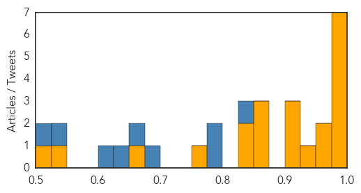

Unknown
30-Day Web Trend
0 alerts, 0 warnings

30-Day Twitter Trend
0 alerts, 0 warnings

Article Locations

Article Confidences

Top Articles:
- 0.997
- (LEAD) S. Korea removes last suspected MERS case from isolation
- 0.996
- Suspected MERS Outbreak Reported in the UK
- 0.995
- MERS outbreak virtually ends
- 0.991
- The Chosun Ilbo (English Edition): Daily News from Korea
- 0.989
- Japanese Encephalitis outbreak in India’s Assam State kills 66
- 0.987
- The World On Arirang
- 0.983
- Q fever numbers 'not unusual'
- 0.981
- All MERS suspects in S. Korea freed from quarantine - Xinhua
- 0.953
- More cases of leprosy are being reported in Florida
- 0.951
- South Korea's last suspected MERS case removed from isolation
- 0.944
- Children's Hospital Colorado watches for recurrence of enterovirus outbreak
- 0.943
- TB Infections Worrying Zimbabwe Health Experts
- 0.935
- KBS World Radio
- 0.929
- ‘JE spreading wings for diagnosis delay’
- 0.917
- Chicago Tribune
- 0.917
- Chicago Tribune
- 0.917
- Chicago Tribune
- 0.917
- Chicago Tribune
- 0.917
- Chicago Tribune
- 0.917
- Chicago Tribune
- 0.917
- Chicago Tribune
- 0.917
- Chicago Tribune
- 0.917
- Chicago Tribune
- 0.916
- Treatment failure in parasite infection tied to virus
- 0.910
- What's Causing Florida's Leprosy Cases?
- 0.889
- Treatment Failure in Parasite Infection Tied to Virus
- 0.874
- What is MERS? Middle East Respiratory Syndrome information as Manchester records case
- 0.864
- Deadly kiss? Bug could spread deadly disease to the Lowcountry
- 0.841
- KBS World Radio
- 0.814
- Rabbit fever (tularemia) found in four N.D. counties
- 0.781
- BUSINESS BEAT: Branch-Hillsdale-St.Joseph Community Health Agency recognized for emergency preparedness planning
- 0.755
- EU approves first malaria vaccine, National, Phnom Penh Post
- 0.748
- Floodwater can pose health risks
- 0.747
- The World’s First Malaria Vaccine Is Almost Here, and Will Be Entirely Not-For-Profit
- 0.744
- Department of Health - Enumclaw Courier-Herald
- 0.734
- More signs of growing unmet health need
- 0.715
- Texas A&M entities helping understand, monitor Chagas disease
- 0.677
- Stay out of flood waters
- 0.663
- Study: Lyme disease growing in high risk areas
- 0.653
- Queensland authorities continue to monitor property at centre of Hendra outbreak
- 0.649
- Sorry, deze pagina kon niet gevonden worden.
- 0.638
- World's first Malaria vaccine
- 0.627
- Polio: Nigeria Not Polio Free Until WHO Says So
- 0.624
- More signs of growing unmet health need - ASMS
- 0.622
- Santa Fe County woman died of plague, health department is treating those in contact with her
- 0.610
- Our citizens must come first - Letters
- 0.609
- Will European HPV Vaccine Investigation Reveal the Truth?
- 0.604
- Stillbirths Outnumber Infant Deaths In The United States For The First Time
- 0.603
- Bat urine could be cause for Hendra virus spreading to Atherton Tableland near Cairns
- 0.587
- Healthcare Big Data Analytics Helps Minn. Find $2B in Savings
Showing top 50 articles...
Top Tweets:
-
No tweets found for Jul 27, 2015
Ebola
30-Day Web Trend
3 alerts, 0 warnings

30-Day Twitter Trend
2 alerts, 0 warnings

Article Locations
Article Confidences
Top Articles:
- 0.999
- Ebola Virus Disease not yet defeated in West Africa
- 0.999
- Malibu Doctor Treating Ebola Patients in Sierra Leone
- 0.999
- World Bank Group Pledges Additional $100 million to Speed New Health Workers to Ebola-stricken Countries
- 0.999
- It’s been a year: Doctor-Patient reflects on winning battle against Ebola
- 0.997
- Vaccines
- 0.994
- Noguchi Ebola Tests Results Trusted – Health Minister
- 0.984
- Salesian Missions launches emergency fund to assist efforts to contain deadly Ebola outbreak in West Africa, issues urgent appeal for donations
- 0.965
- Ebola Survivor Writes a Book about His Experience
- 0.964
- Imperfect vaccines could make viruses more dangerous, at least in chickens
- 0.941
- Leaky Vaccines Enhance Spread of Deadlier Chicken Viruses – Phenomena
- 0.923
- President Sirleaf Commends Healthcare Workers in Bomi County; Visits Quarantined West Point
- 0.904
- Doctor who had Ebola, wife share struggle to survive
- 0.904
- Ebola nurse honoured by Prime Minister
- 0.869
- E-Mist’s African initiative thrusts Fort Worth company back into spotlight
- 0.856
- Brantlys share struggle to survive Ebola
- 0.850
- Liberia Apologise to Nigeria Over Patrick Sawyer's Importation of Ebola to Nigeria
- 0.842
- Neoliberal Ebola: palm oil, logging, land grabs, ecological havoc and disease
- 0.840
- Neoliberal Ebola: palm oil, logging, land grabs, ecological havoc and disease
- 0.751
- LIBERIA: Ebola Discovered, Six Cases Reported Five Of The Victims Are Reported Deadd
- 0.661
- Palor Conteh fears prevalence of illegal burials
- 0.533
- Liberia Will Forever Be Grateful To Nigeria - Envoy
- 0.518
- Liberians Mark 168 Years of Independence
Top Tweets:
- 0.831
- RT: Core public health principles were used during the CDC response to the Ebola outbreak. Find out how. RoadtoZero https://t.co/…
- 0.788
- RT: .@MSF AfricaStopEbola "ce concours de chant est important car il faut à tout prix vaincre Ebola" TikenJahFakoly à Conakr…
- 0.776
- King Salaman de BANLIEUZ'ART OFFICIEL a un petit message pour ebola ! Africa Stop Ebola http://t.co/GBFjFdl4Mo
- 0.679
- New vaccines for malaria HIV and Ebola can spread diseases say shocking stats ... - Mir http://t.co/TREY9XsUWi ebola EVD
- 0.663
- UniIorin working to develop Ebola vaccine says VC | News24 Nigeria - News24 Nigeria http://t.co/IMsaiWPL5a ebola EVD
- 0.644
- RT: AfricaStopEbolaMSF merci aux artistes locaux et africains pour labmobilisation cintre Ebola Tiken Jah Fakoly ala blue zon…
- 0.625
- FACT: The ASEOWA health workers were deployed with-in a month of the Ebola crisis Africaagainstebola @WorldVisionEU
- 0.534
- British Troops Shouldn't Leave Sierra Leone Until Ebola Is Gone | Forces TV - Forces TV http://t.co/nYuhRU8j82 ebola EVD
- 0.504
- Euro MP warns on Ebola checks - Blackpool Gazette - Blackpool Gazette http://t.co/zB95FbZNJC ebola EVD